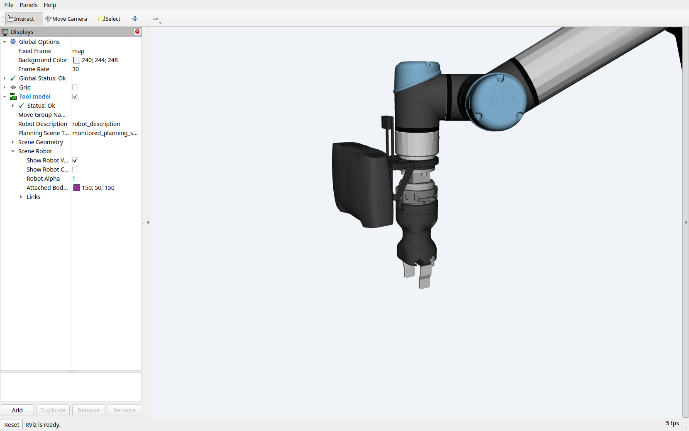
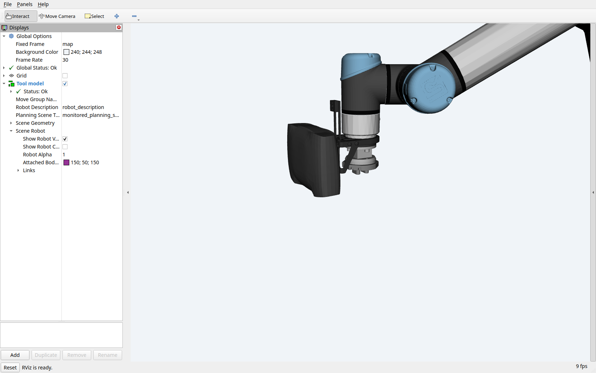

Robot models and controllers
EROBS uses the selected tool’s robot model to plan motion and sends the result to the arm and tool controllers. The geometry, planning groups, joint names, and controller interfaces must agree.
The operator GUI loads its own model file. A correct-looking robot in the GUI does not establish that MoveIt and the driver are using the same geometry.
Model packages
These packages live under src/custom-ur-descriptions/:
Package |
Contents |
|---|---|
|
CMS arm/tool Xacro templates, expanded URDFs, meshes, and calibration |
|
CMS launch files, SRDF, planners, limits, controllers, RViz, and Servo |
|
LIX arm/Hand-E geometry and a calibration placeholder |
|
LIX Hand-E planning and controller configuration |
URDF describes links and joints; SRDF adds planning groups, named states, and collision rules. Xacro generates these descriptions from reusable templates. See the official URDF/SRDF guide and Xacro tutorial for the formats.
How CMS starts the robot stack
The orchestrator’s lifecycle manager launches cms_moveit_config/launch/robot_bringup.launch.py for the selected tool: none, hande, epick, 2fg7, or pipettor.
The launch assembles four parts:
Geometry and calibration. Read the tool’s
launch_urdffrom the beamline YAML and expand that Xacro. Passcms_robot_description/config/ur5e_calibration.yamlto both the MoveIt model and the UR driver.Planning configuration. Select the tool branch in
srdf/ur.srdf.xacro, itsconfig/<tool>/joint_limits.yaml, and the configured MoveIt controller file. Load kinematics and the OMPL, Pilz, and STOMP planners.Robot and tool control. Include the UR driver launch and start the selected tool’s controllers or driver nodes. The UR launch provides
robot_state_publisher, which publishes the robot’s transforms.Planning and visualization. Start
move_groupwith MTC execution support, and RViz with the selected robot model.
Paths in steps 2–4 are relative to cms_moveit_config/. The orchestrator manages startup, reuse, and replacement of this stack during tool changes; see tool and MoveIt lifecycle.
Controller configuration
Controller definitions and MoveIt’s command routing are separate. Files below are relative to src/custom-ur-descriptions/cms_moveit_config/:
File |
Role |
|---|---|
|
Shared UR controller definitions and settings, including the arm trajectory controller |
|
Tool controllers loaded by their spawners |
|
Action interfaces and joint names that MoveIt uses to send commands |
For example, Hand-E uses the arm’s FollowJointTrajectory interface and the gripper’s ParallelGripperCommand interface. Its MoveIt controller file must match those running controllers. 2FG7 and the pipettor use separate driver nodes; see end effectors for their interfaces and mock-mode limitations. The official ros2_control overview explains the controller framework.
CMS configures the speed-scaling broadcaster to run asynchronously at 100 Hz. The UR5e controller loop remains 500 Hz. Intermittent controller timing faults remain unresolved.
Runtime and GUI models
MoveIt and the UR driver expand the selected Xacro at startup. The GUI reads the existing file named by grippers.<tool>.urdf_file from the description package’s urdf/ directory. It does not generate that file from Xacro or use MoveIt’s expanded description.
For ePick, CMS bringup forwards the selected cup profile to both MoveIt and the UR driver. The GUI still uses its separately generated URDF; keep it aligned with the active cup geometry.
A tool-model change in simulation
These RViz views show a mock Hand-E docking sequence. Both use the same viewpoint and arm joint positions at safe_tool_exchange.
{kind=link}

Before docking: hande. The model includes the Hand-E body and fingers. Open the full-resolution screenshot.
{kind=link}
{kind=link}

After docking: none. The orchestrator restarted MoveIt with the no-tool model. Open the full-resolution screenshot.
{kind=link}
The sequence was MoveTo → Pause → dock Hand-E → MoveTo, and all four steps succeeded. These images show a simulated model change; they do not verify physical release or coupling. See tool exchange for task settings.
Joystick and Servo
enable_joystick:=true adds manual Cartesian control when the CMS stack starts. Joystick input passes through translation and rotation mappings to MoveIt Servo, which sends joint trajectories to the arm controller.
In cms_moveit_config/, config/joystick_teleop.yaml defines the controls and config/servo.yaml defines Servo behavior. The launch selects Cartesian input through Servo’s command-type service. Servo checks self/scene collisions, but this configuration disables Octomap collision checks.
The executable cms_servo_node is built from src/servo_node_jazzy.cpp, a local adaptation with a Jazzy startup-clock workaround. It waits for a current robot state before starting its loop and provides its own pause service.
Servo operates outside the orchestrator’s task queue. Pausing or canceling a task does not stop joystick commands.
When changing a model
Update the geometry, SRDF groups/states, controller joint names, tip frame, and calibration together.
Regenerate the GUI’s expanded URDF when its Xacro or selected options change, and rebuild affected packages.
Restart the affected runtime and GUI, then compare the loaded geometry, working tip, and joint states.
Runtime startup only requires non-empty descriptions from MoveIt; it does not check model structure.
The LIX calibration file still contains a replacement placeholder, and its deployment settings are incomplete. Follow beamline adaptation before using those packages for another installation.